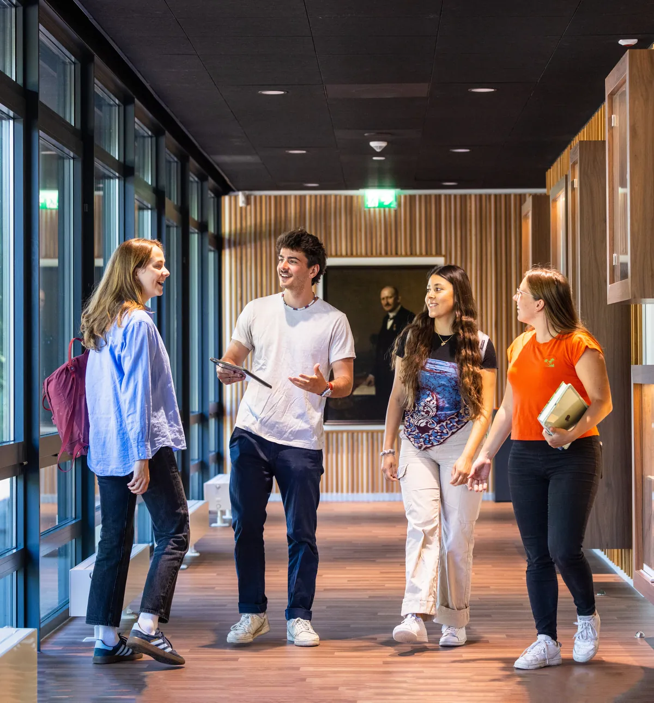
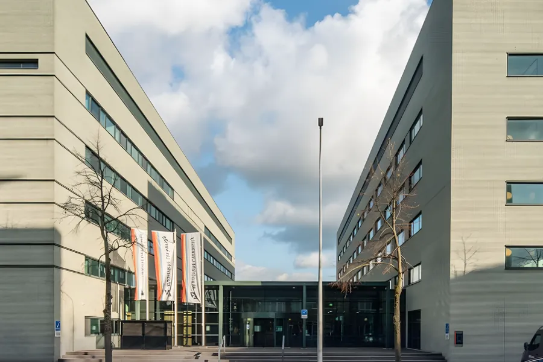
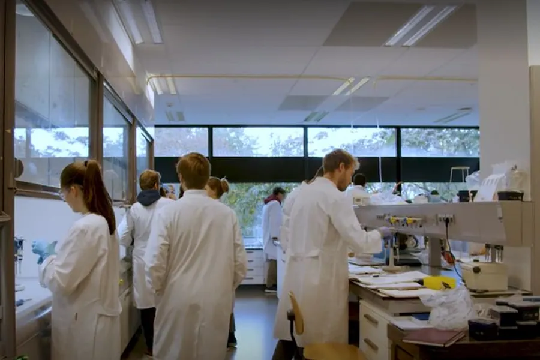
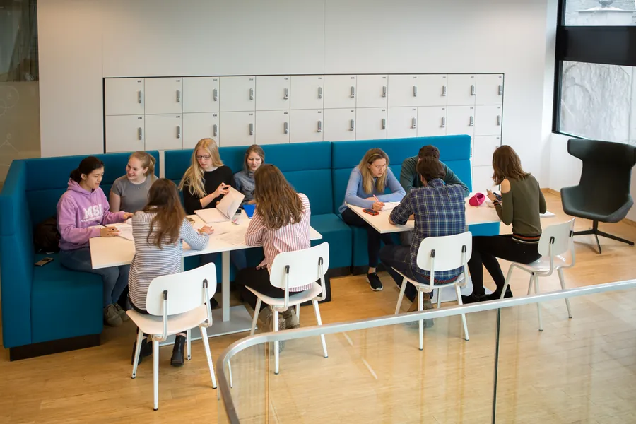

Applying to the Maastricht Science Programme
You only need to start with the first one. We guide you through the rest, and you can ask us anything on the way.
Which passport do you have?
What we ask for: a few documents, a motivation letter and a 10 to 15 minute online conversation. It is a conversation, not a maths test.
Still deciding? Explore the courses See where graduates go

Is MSP for you?
That is a good reason to look at MSP. Everyone starts with biology, chemistry, physics and how science works. After that you choose: go deep into one science, or combine several.
Not sure which is you? Try a week with real courses.
How it works
Tick a step when you have done it, and this page shows your next one. Your ticks stay in this browser only.
Studielink is the Dutch website where every student applies. Log in with DigiD if you live in the Netherlands, otherwise create an account, and choose MSP.
Apply now: most applicants apply before they have their final results, whether that is the vwo exam, the Abitur, a Belgian or Luxembourg diploma or the IB. You upload your most recent grades, with predicted grades if your school gives them.
An offer then depends on your final diploma (a conditional offer). You send the certified copy by 31 August 2027, so results that come in June or July are in time.
In the MyApplication portal you upload a few documents and your motivation letter.
The letter matters: together with your grades it is where the interview starts. You write it in the MSP format in the portal; letters in other formats are not taken into account.
Tip for question 4: on our course page you can star the electives you like and copy your picks for the letter.
The university’s Student Services Centre looks at your earlier education. You don’t have to do anything for this step.
Subject: Conditional admission letter - Complete your application to participate in the selection process
Dear Applicant,
We have assessed the diploma/grades transcript you have submitted. Based on this, we are happy to let you know that you meet the prior education requirements for the study programme B Liberal Arts and Sciences (MSP), on the condition that you have obtained (or will obtain on time) the required diploma/additional requirements.
Important! If you do not meet the admission requirements, you cannot start your study programme at Maastricht University.
Selective study programme. The study programme B Liberal Arts and Sciences (MSP) is a selective programme. This means you need to complete the selection process to assess whether you can be admitted.
Complete your open admissions tasks. Please make sure you complete all of your open admission tasks so that we can assess your application.
MSP's Board of Admissions reads your motivation letter and looks at your background in maths and science. If you are invited, you have a short online conversation with one of our staff.
MSP is a broad science programme, so a profound interest in the sciences is required. A mathematics background that includes calculus, specifically the fundamentals of differentiation and integration, is highly recommended (equivalent to Dutch VWO Wiskunde B). The MSP Admissions Office may ask for additional tests proving a high level in mathematics, specifically calculus, integration and differentiation.
Within three weeks after the conversation you hear the Board’s decision by email. If you are offered a place, a few practical tasks remain.
Complete all enrolment tasks by 31 August 2027, 23:59 CET. Once accepted, start looking for housing early, in spring or early summer.
Subject: Enrolment & your UM email account, congratulations you’re almost there!
Dear Applicant,
Congratulations! Based on your participation in the selection process we are happy to offer you a place in the study programme B Liberal Arts and Sciences (MSP) at Maastricht University (UM).
Enrolment tasks. Before you can start your studies, you still need to arrange some practical matters to enrol. These enrolment tasks are now available in your task list.
Your UM email account. Please check your UM email inbox regularly for information about the introduction programme and faculty updates.
Stuck on a step? Write to the admissions office: a person answers.
You start with the Introduction Days. See what last year’s looked like, and where our graduates went afterwards.
What you will study
140 courses and lab skills in eight worlds of science, from the Earth and living cells to the brain and the cosmos. Open a world, look inside, and star the courses you like: it helps with your motivation letter too.
Explore the coursesMaastricht University, Faculty of Science and Engineering



Plainly
€4,595€20,471
The 2027–28 fee for EU/EEA students. An ordinary Dutch bachelor costs €2,771: MSP is higher because it is officially a small-scale, intensive programme. You can pay in eight monthly instalments.
The 2027–28 fee for students from outside the EU/EEA. If you need a visa, you pay the full year at once before UM applies for your residence permit.
Can't pay the difference? EU/EEA students can ask for the UCM/MSP tuition fee waiver when they apply.
about €1,460 a month
What students in the Netherlands spend on average, including about €560 on rent (Nibud 2024). Your own costs depend on your room and your lifestyle.
UM has no student housing of its own, but works with Maastricht Housing and Hospi Housing (UM's housing page). Start looking in spring, as soon as you have accepted your offer.
which fee and which help apply to you.
For parents
Your dates
| Applications open in Studielink | 1 October 2026 |
| Apply and upload your documentsEU, EEA or Swiss nationalityOther nationalities | 1 May 20271 April 2027 |
| Bachelor's Open Day at UMplanned; programme and registration on UM's Open Day page | 27 February 2027 |
| Online Q&A with Admissions19:00 CET | 4 March 2027 |
| Selection, including the conversation, closes17:00 CET | 28 May 2027 |
| Visa file completeif you need a visa or residence permit | 30 June 2027 |
| Tuition fee paidstrongly recommended | 1 August 2027 |
| All enrolment tasks completecertified diploma, payment details, passport or ID | 31 August 2027 |
Good to know
Prefer to talk it through? Chat with our admissions assistant
Yes. The central Student Services Centre and the MSP Admissions Office guide you together. You start in Studielink, which opened on 1 October 2026, and upload the certified copy once you have it, before 31 August.
MSP is a broad science programme, so a profound interest in the sciences is required. A mathematics background that includes calculus, specifically the fundamentals of differentiation and integration, is highly recommended (equivalent to Dutch VWO Wiskunde B). The MSP Admissions Office may ask for additional tests proving a high level in mathematics, specifically calculus, integration and differentiation.
Yes. You can apply for several programmes at Maastricht University at once. Through Studielink you may have at most four active programme choices across all Dutch universities at the same time.
That depends on your curriculum. Applicants whose diploma is based on a non-EU/EEA curriculum pay a handling fee. This follows the school’s curriculum, not where the school is located.
Where to next